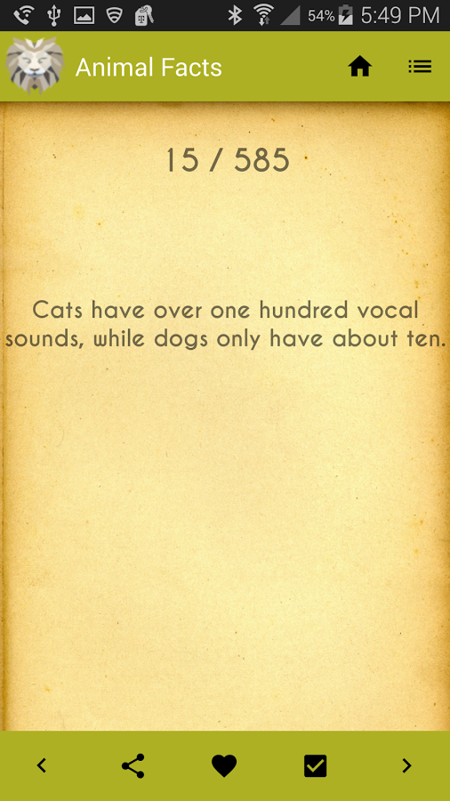
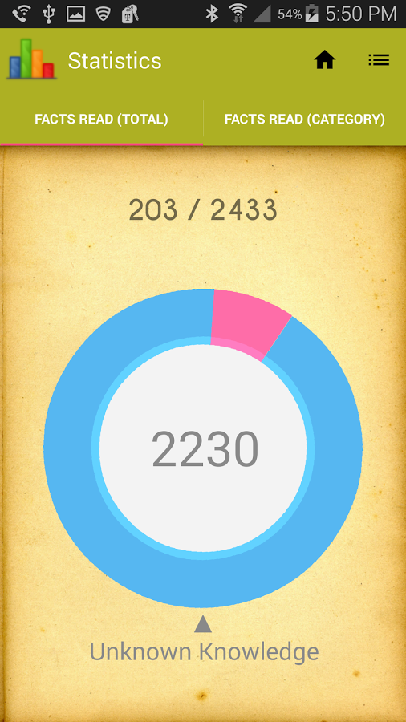
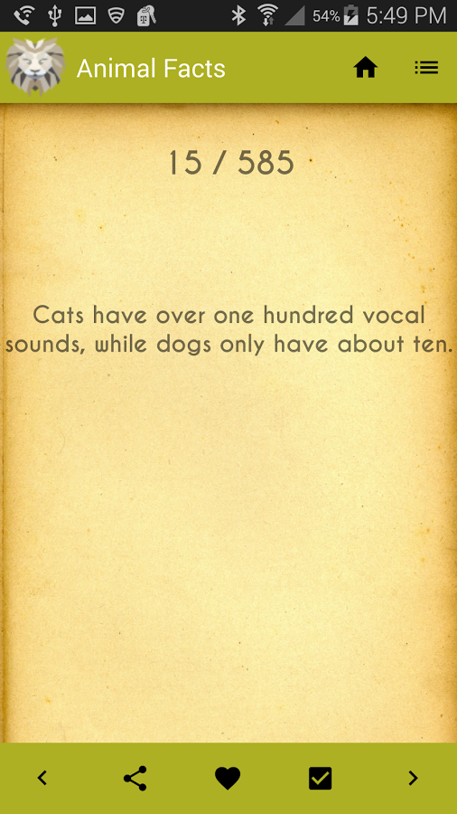
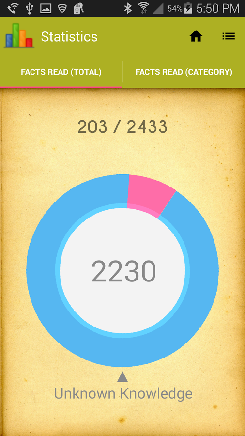

Introduction
Welcome to my portfolio site! I am a 4th year Computer Science student at California State Polytechnic University in Pomona, California. I am currently working part-time as a Software Development intern and am looking for further internships before graduation. After graduation, I plan to immediately start my job hunt to look for likeminded individuals to work with.
If you continue on, you will find information on some personal projects I have done, take a look at my most up to date resume, and find my contact information.
Thank you!
Resume
EDUCATION
California Polytechnic State University
Expected: March 2017
Bachelor of Science in Computer Science
Pomona, California
GPA: 3.51 - Dean's List
Related Courses (Hover over a class for a description!)
- Data Structures and Algorithms I
- This was a challenging, yet fun class. Linked and array-based data structures, lists, stacks, queues, hashing, searching, recursion, and an introduction to tree structure were the primary subjects of the course.
Grade Received: A
- Data Structures and Algorithms II
- One of my favorite classes thus far. The data structures that were covered in the course included trees, priority queues, graphs, heaps, sets, and maps. Additionally, sorting algorithms such as Merge, Quick, Bubble, Insertion, Heap, Counting, Selection, and Radix Sort were covered (some more than others).
Grade Received: A
- C++ Programming
- This was a challenging class for me coming from a Java background; however, it was nice to learn something new. The class covered class encapsulation, inheritance, polymorphism, exception handling, template class, and OOP design all in C++.
Grade Received: A
- Computer Logic
- Not my favorite class, but I can definitely say I learned alot. We covered boolean algebra with applications to computers and logic design, ALU, flip-flops, and sequential machines.
Grade Received: B+
- Computer Organization and Assembly Programming
- This class was ALOT of work, but it was well worth the time considering it was my first time working with Assembly Programming. A large portion of the class revolved around learning the MIPS architecture. Towards the end of the course, we did touch on ARM. Furthermore, we discussed I/O, interrupts, and addressing modes.
Grade Received: A-
- Design and Analysis of Algorithms
- This was a great class to expand my knowledge on various types of algorithms. Throughout the course, we covered algorithm design techniques including divide-and-conquer, the greedy method, dynamic programming, and backtracking. We also covered Merge Sort, Quick Sort, the Knapsack Problem, the Traveling Salesman, and Dijkstra's Algorithm.
Grade Received: A
- Language Translation and Automata
- Although an important course for understanding abstract machines, I can't say I enjoyed it! The class consisted of language translation, regular expressions, finite automata, lexical analysis, context-free grammars, and push down automata.
Grade Received: B+
- Programming Graphical User Interfaces
- Easy and fun class! The class consisted of getting into pairs and creating a variety of games using Swing in Java with the NetBeans IDE.
Grade Received: A
- Numerical Methods
- This was a very interesting class. We were required to code a spread of mathematical programs, some more fun than others. A description of the class includes error analysis, zeros of a function, systems of linear equations, interpolation, chebyshev approximation, least squares approximation, and numerical integration.
Grade Received: B+
- Python Programming
- I am currently in this class. Will be updated soon!
Grade Received: TBA
- Computer Architecture
- I am currently in this class. Will be updated soon!
Grade Received: TBA
- Programming Languages
- I am currently in this class. Will be updated soon!
Grade Received: TBA
Skills
Languages and Frameworks
|
Beginner |
Intermediate |
Proficient |
Advanced |
| Java |
|
|
|
X |
| Android SDK |
|
|
X |
|
| Python |
|
|
X |
|
| HTML/CSS |
|
|
X |
|
| C++ |
|
X |
|
|
| PHP |
|
X |
|
|
| Bootstrap |
|
X |
|
|
| Swift |
X |
|
|
|
| Django |
X |
|
|
|
| Javascript |
X |
|
|
|
| JQuery |
X |
|
|
|
| SQL |
X |
|
|
|
Software
|
Beginner |
Intermediate |
Proficient |
Advanced |
| Android Studio |
|
|
X |
|
| Eclipse |
|
|
X |
|
| PyCharm |
|
X |
|
|
| PhpStorm |
|
X |
|
|
| NetBeans |
|
X |
|
|
| XCode |
X |
|
|
|
Development Tools
|
Beginner |
Intermediate |
Proficient |
Advanced |
| Git |
|
|
X |
|
| SVN |
|
|
X |
|
Experience
Reazon Systems, Inc.
***
Web Development Intern
Santa Ana, California
Accomplishments:
- Converted outdated code to incorporate a responsive design using Bootstrap and ColdFusion
- Created a custom sidebar to better accomodate all screen sizes
- Resonsiveness done using media queries
- Applied JQuery to the footer of each page to use an accordion
- Responsible for ensuring Bootstrap classes are unique to existing code
Google Applied CS Course - Android Development
***
Certificate of Completion: Certificate.pdf
Pomona, California
Source Code:
Accomplishments:
- Responsible for completing pre-work before the initial workshop date
- Implement a certain data structure
- Create the basic layout for the future workshop in Android Studio
- Completed one app for each workshop using various data structures
- Participated in a 'hackathon' type setting
- In a duo, created a fully functional memory game with sound and graphics within the timeframe of the workshop
Code
Calculating a Chebyshev Polynomial - Dynamic Programming
Code Example 1
Chebyshev polynomials are a set of orthogonal polynomials used to approximate the best fit line given various data points. Additionally, they are connected with trigonometric mutiple-angle formulas.
The following program will calculate a Chebyshev Polynomial up to whatever the user enters. My approach was to use dynamic programming to calculate the polynomials above n = 1 due to the fact that the calculations are often repeated otherwise. With this method, calculating an extremely big n takes no more than a few milliseconds because we are building off of our previous calculations.
/**
* The following program will calculate a Chebyshev Polynomial up the amount the user enters.
*/
public class Driver {
public static void main(String[] args) {
Scanner scanner = new Scanner(System.in);
System.out.println("Enter the Chebyshev Polynomial to calculate: ");
int num = scanner.nextInt();
calculatePolynomial(num).printPolynomial();
scanner.close();
}
/**
* Calculate the Chebyshev Polynomial with a highest degree of n.
* Uses the recurrence relation: Tn+1(x) = 2x*Tn(x) - Tn-1(x)
* @param Highest degree polynomial to calculate up to.
* @return Polynomial
*/
private static Polynomial calculatePolynomial(int n) {
// Starting polynomials to build off of
if(n == 0) {
return new Polynomial(new int[] {1});
} else if(n == 1) {
return new Polynomial(new int[] {0,1});
}
Polynomial[] chebyshevPolynomials = new Polynomial[n + 1];
chebyshevPolynomials[0] = new Polynomial(new int[] {1});
chebyshevPolynomials[1] = new Polynomial(new int[] {0,1});
for(int i = 2; i <= n; i++) {
int[] coefficients = new int[i + 1];
int[] secondCoefficients = new int[chebyshevPolynomials[i - 2].coefficients.length];
// Multiply 2x by Tn(x)
for(int j = 0; j < chebyshevPolynomials[i - 1].coefficients.length; j++) {
coefficients[j + 1] = 2 * chebyshevPolynomials[i - 1].coefficients[j];
}
// Multiply -1 by Tn-1(x)
for(int j = 0; j < chebyshevPolynomials[i - 2].coefficients.length; j++) {
secondCoefficients[j] = -1 * chebyshevPolynomials[i - 2].coefficients[j];
}
// Add 2x*Tn(x) and Tn-1(x)
int[] finalCoefficients = new int[i + 1];
for(int j = 0; j < finalCoefficients.length; j++) {
if(j > (secondCoefficients.length - 1)) {
finalCoefficients[j] = coefficients[j];
} else {
finalCoefficients[j] = coefficients[j] + secondCoefficients[j];
}
}
chebyshevPolynomials[i] = new Polynomial(finalCoefficients);
}
return chebyshevPolynomials[n];
}
/**
* The following helper class images a polynomial using an array in which
* the indices of the array are the exponent and the values are the coefficients.
*/
private static class Polynomial {
public int[] coefficients;
public Polynomial(int[] coefficients) {
this.coefficients = coefficients;
}
public void printPolynomial() {
if(coefficients.length == 1) {
System.out.println("1");
return;
}
if(coefficients.length == 2) {
System.out.println("x");
return;
}
String polynomial = coefficients[coefficients.length - 1] + "x^" + (coefficients.length - 1);
for(int i = coefficients.length - 2; i > -1; i--) {
if(coefficients[i] == 0) continue;
else if(coefficients[i] > 0) polynomial += " + " + coefficients[i];
else if(coefficients[i] < 0) polynomial += " - " + (-1 *coefficients[i]);
if(i == 1) polynomial += "x";
else if(i > 1) polynomial += "x^" + i;
}
System.out.println(polynomial);
}
}
}
Picture Organizer - A Python Program
Code Example 2
The following program will transfer all my pictures from my camera to their appropriate directories. Using the Tkinter module, it will pop up a small window allowing me to enter what I want to name the folder containing all of my new pictures. If the file I have entered has already been created, it will just go further into the subdirectories.
The files are stored in the following format:
E: \ My Digital Camera Pictures \ [Year] Pictures \ [Year] [Month]-[Day]-[Year] - [File Name I Give]\[All Pictures Go Here]
I wrote this program mainly to save time and ensure I wouldn't have to rename each picture with their appropriate timestamps.
import time
import os
import tkinter as tk
import shutil
# directory of pictures
directory_path = "E:\\My Digital Camera Pictures\\"
# directory of camera path
picture_directory_path = "I:\\DCIM\\100MSDCF\\"
# Creates a GUI window to be able to enter the name of the new folder of pictures.
class StorePictures(tk.Tk):
def __init__(self):
tk.Tk.__init__(self)
self.title("File")
self.label = tk.Label(self, text="Name")
self.entry = tk.Entry(self)
self.button = tk.Button(self, text="Done", command=self.on_button_click)
self.label.pack(side=tk.LEFT)
self.button.pack(side=tk.BOTTOM)
self.entry.pack(side=tk.RIGHT)
def on_button_click(self):
pictures = os.listdir(picture_directory_path)
date_string = get_date_string(pictures[0]) + self.entry.get() + "\\"
path = get_year_directory_path(directory_path)
path = get_date_directory_path(path, date_string)
count = get_number_of_jpg(pictures)
index = 0
for picture in pictures:
filename, file_extension = os.path.splitext(picture_directory_path + picture)
if file_extension == ".JPG":
index += 1
picture_date_created = get_date_string(picture) + self.entry.get() + " #"
temp_picture_name = picture_date_created + str(index) + " of " + str(count) + ".JPG"
picture_directory = path + temp_picture_name
shutil.copy(picture_directory_path + picture, picture_directory)
self.quit()
# creates year folder path (EX: 2016 Pictures, 2015 Pictures, etc.) if it does
# not already exist
def get_year_directory_path(path):
temp_directory = path + "20" + time.strftime("%y") + " Pictures\\"
if not os.path.exists(temp_directory):
os.makedirs(temp_directory)
path = temp_directory
return path
# creates date folder path (EX: 2016 Pictures / 2016-04-06 - [Some event here]) if it
# does not already exist
def get_date_directory_path(path, date_string):
temp_directory = path + date_string
if not os.path.exists(temp_directory):
os.makedirs(temp_directory)
path = temp_directory
return path
# returns the appropriate time stamp to attach to the folder name
def get_date_string(picture):
return "20" + time.strftime("%y") + " - " +
time.strftime("%m-%d-%y", time.localtime(os.path.getctime(picture_directory_path + picture))) + " - "
# returns the amount of jpg pictures in the camera folder
def get_number_of_jpg(pictures):
count = 0;
for picture in pictures:
filename, file_extension = os.path.splitext(picture_directory_path + picture)
if file_extension == ".JPG":
count += 1
return count
app = StorePictures()
app.mainloop()
 



 ===>>
===>>
 ===>>
===>>